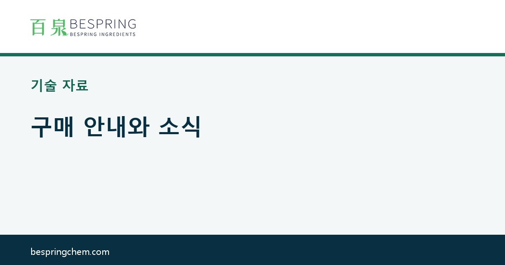
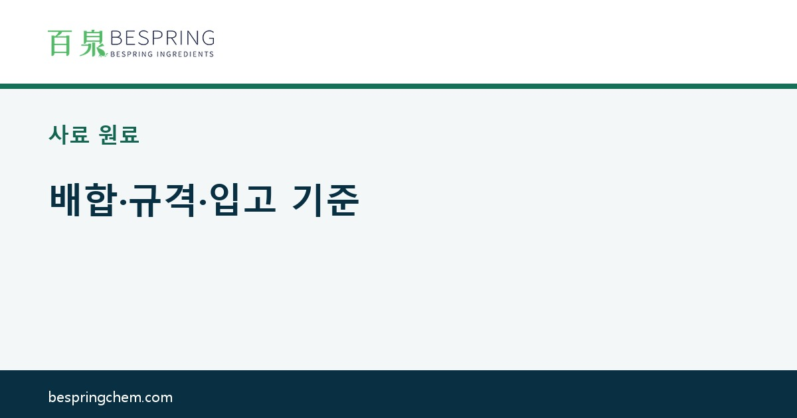
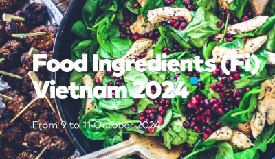

STPP와 SHMP 선택 기준
삼인산나트륨과 헥사메타인산나트륨을 용도, 용해 거동, 시험법과 입고 기준으로 비교하세요.
구매자 가이드최신 통찰력
저희 가이드는 화학제품 등급 비교, 제품 요구사항 정리 및 해외 구매 계획에 도움을 드립니다. 견적을 원하시면 필요한 규격과 목적지 시장을 알려 주세요.

삼인산나트륨과 헥사메타인산나트륨을 용도, 용해 거동, 시험법과 입고 기준으로 비교하세요.
구매자 가이드
칼슘과 인을 동일한 기준으로 비교하고 수화 형태, 입도, 불순물 및 시험법을 확인하세요.
구매자 가이드규격서, SDS, 로트 성적서, 포장 표시, 상업송장과 운송 서류를 발주 전에 확인하세요.
구매자 가이드화학 형태, 순도, 불순물, 시험법과 적용 서류를 대상 용도에 맞춰 비교하세요.
구매자 가이드계약 상대, 제조·포장 사업장, 원산지, 규격, 로트 서류 및 변경 절차를 확인하세요.
구매자 가이드1 / 5
전시 아카이브
Browse Bespring Chemical의 국제 전시회 기록 및 날짜, 위치, 부스 및 포트폴리오 초점에 대한 각 이벤트 페이지를 엽니 다.

Bespring Chemical은 2025년 4월 15–17일 모스크바에서 열린 Global Ingredients Show 2025에 부스 A512로 출전했습니다.
공지사항
Bespring Chemical은 2024년 10월 9–11일 호찌민시에서 열린 Fi Vietnam 2024에 부스 B40으로 참가했습니다.
공지사항
Bespring Chemical은 2024년 4월 23–25일 모스크바에서 열린 Global Ingredients Show 2024에 부스 D115로 참가했습니다.
공지사항
Bespring Chemical은 2023년 11월 28–30일 프랑크푸르트에서 열린 Fi Europe 2023에 부스 3.1A33으로 참가했습니다.
공지사항
Bespring Chemical은 2023년 8월 10–12일 호찌민시에서 열린 Vietfood & Beverage 2023에 부스 A3.127로 참가했습니다.
공지사항1 / 5